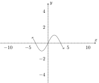
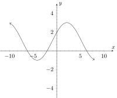

This covers doing transformations and translations at the same time. In particular we discuss how to determine what order to do
the translations/transformations in.
Doing Translations and Transformations at the Same Time.
The general rule of thumb is that the order of the translations/transformations follows the order of operations in the analytic form;
with the important rule that everything involving is backward.
As an example, lets suppose we have a function and we define a manipulation of as . Moreover the following is the graph for
;

Let’s consider the manipulation of which we called . There is a lot to unpack in the definition of and we need to make sure
that we apply the transformations and translations in the right order, but remember that just means we need to apply them in the
order of operations. The easiest way to do this is to pretend to plug in an value and determine what the order is that each
computation is applied.
Calculating the Stuff:
If we were to plug in a number for , the first thing we would do is add 1. This appears to be a shift to the right one, but
remember everything about is backwards, so it’s really a shift to the left one. Next we would divide the -value by 2, which (again
because everything about is backwards) means we stretch the value to twice it’s original width. Thus in total it looks like we
would shift left 1 and then make the graph twice as wide as it was originally... but againeverything about is backwards, including
the order we apply the changes in, so we actually want to make everything twice as wide and then shift everything left
one.
Calculating the Stuff:
Now we tackle the values. To do this, we pretend that we have calculated some value for the portion and replace it with a
number. In our case then we would pretend to replace with a number, and then see what computations apply from there. Thus the
first change (once we have replaced the ‘’ part with a number) would be to multiply the function result by 2, which means
stretching the -value to twice it’s height. (Thankfully changes work like one expects, so no need to flip our thinking here like
we did with the stuff.) Finally, adding one to the overall function means we will shift everything up one. Since the -values work
the way we would normally expect (unlike the stuff), this means that in total we would make everything twice as tall and then
move everything up one.
It may help to do a concrete computation to see that our translation/transformations occur in this order. Below we compute
and make note of the translations/transformations as we go.
Let’s compute for .
(a)
The first thing we do to compute is compute . Adding 1 to the value is a shift to the rightto the leftupdown 1.
(b)
The second computation once we have is to “divide by 2”, which is a horizontal stretch by 2, and yields
.
(c)
Since does everything backwards we want to reverse the last two instructions; so we will “stretch horizontally by 2” then
“shift left by 1”.
(d)
Next we would compute the actual functional value of which we will denote with (we don’t know what itself does, so we
will just call the output ). So we want to compute
(e)
The first computation to happen to then is multiply by 2, which is a vertical stretch by a factor of 2.
(f)
Next we add 1 to our result, which is a shift to the rightto the leftupdown 1.
(g)
Finally, since the stuff is applied in the normal order, that means we would stretch vertically by a factor of 2, then translate
vertically by 1.
All this yields the following graph;

Notice that we can use our knowledge of how the transformations/translations work (and what order to do them) to reverse
this process. Let’s say we want to take the original and we want to apply the following changes in the following
order:
(a)
Move it right 3.
(b)
Constrict it by a factor of 4 (aka to of it’s normal width).
(c)
Move it up 1.
(d)
Stretch vertically by a factor of 2.
We can write the analytic form of this description by making sure that the order of operations agrees with the order the
instructions were given (reversing the effects on as usual). (Note that the and changes can be separated and
done independently. Thus the description ‘move left 1, then move up 1, then stretch horizontally by a factor of 3’
could be re-written as ‘move left 1, then stretch horizontally by a factor of 3, then move up 1’ since we can switch
around directions that are applied to different variables.)
We wish to apply the following changes (in order) to
:
(a)
Move right 3
(b)
Constrict horizontally by a factor of 4 (aka to of it’s normal width)
(c)
Move up 1
(d)
Stretch vertically by a factor of 2.
Stuff:
So we want to move (translate) before we stretch (transform) . But because it’s we want to make sure that the order of
operations is in the opposite order. Thus the order of operations should show compute the stretch before the translation.
Stuff:
Next we want to put in the vertical changes. Our directions listed the translation before the transformation, and the order of
operations should match the desired order of the transformation/translations. This means we need parentheses again. Thus
including the changes above we will have;
Thus, our final analytic form to describe the given translations and transformations is;
To see the effects of changing the various parameters try manipulating the values for , , , and in the following
interactive graph. Pay special attention to when these values are positive, negative, and bigger or smaller than
1.
You can also watch a short video giving an in-depth walkthrough example on how to graph the result of
translations/transformations of a graph below.
_
1 : In order to graph multiple translations and transformations at the same time, you should...
Follow order of
operations.Always graph -stuff first.Always graph -stuff first.Follow the order of operations in reverse order.Follow the
order of operations in reverse order for -stuff (Because everything about is backwards!) and the order of operations in correct order
for -stuff.